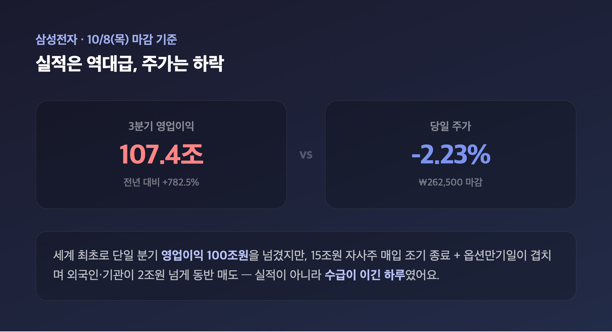
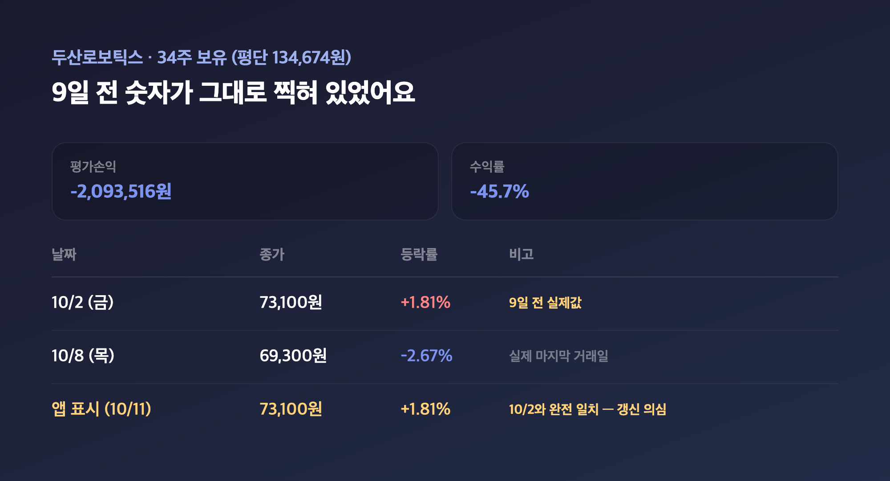
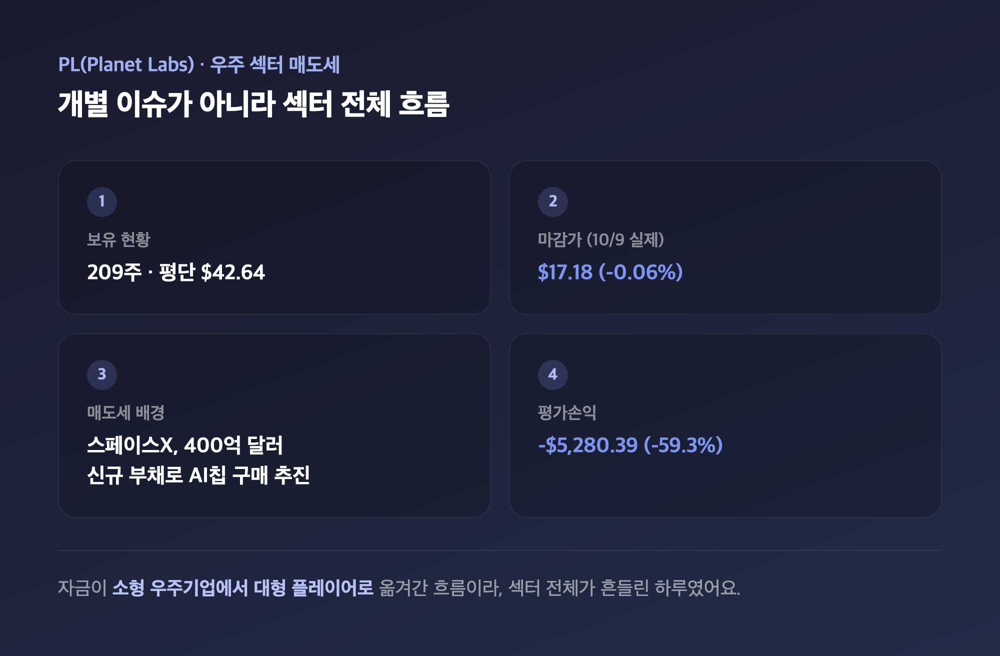
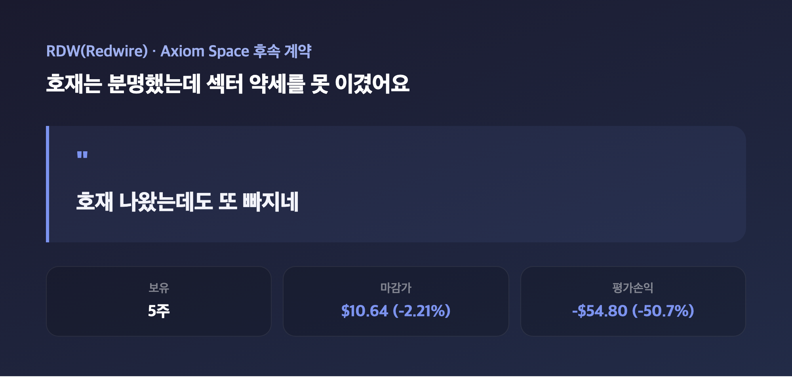
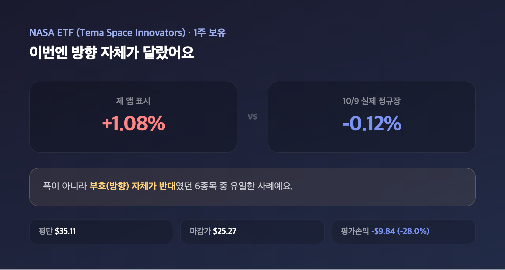
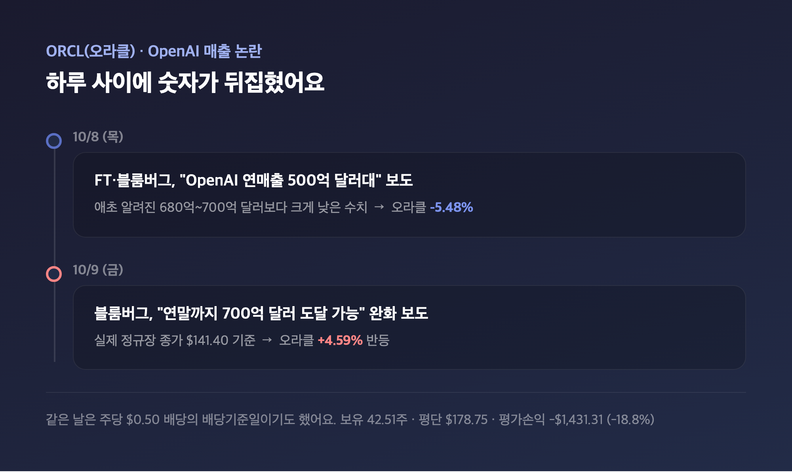
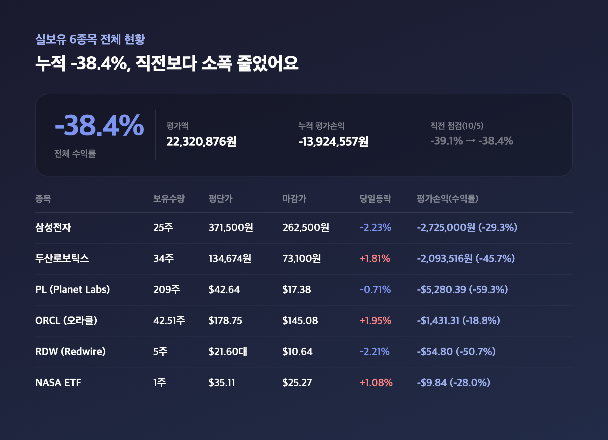

일요일 오후에 포트폴리오 앱을 열었는데, 두산로보틱스 숫자가 어딘가 익숙해서 한참 들여다봤어요. 알고 보니 9일 전 수치랑 가격·등락률이 정확히 똑같이 찍혀 있더라고요. "이거 설마 업데이트가 안 된 건가" 싶어서 오늘은 평소보다 숫자 하나하나를 더 꼼꼼히 확인하면서, 실보유 중인 6종목을 점검해볼게요.
🇰🇷 삼성전자 — 107조 실적에도 -2.23%, 국내·미국 마감일부터 다릅니다
|
삼성전자 ₩262,500 (-2.23%) / 평단 371,500원 대비 -29.3% (평가손익 -2,725,000원) |

| 날짜 | 국내 증시 상태 | 비고 |
|---|---|---|
| 10/8 (목) | 정상 거래 | 국내 2종목의 실제 마지막 거래일 |
| 10/9 (금) | 휴장 (한글날) | — |
| 10/10~11 (토~일) | 주말 휴장 | — |
먼저 짚어둘 게 있는데요, 이번 점검은 국내랑 미국 종목의 "최근 마감일"이 서로 달라요. 한글날(10/9)이 주말이랑 겹쳐 10/9부터 오늘(10/11)까지 사흘 연속 국내 증시가 쉬었거든요. 그래서 삼성전자·두산로보틱스는 10/8(목) 마감가가, PL·ORCL·RDW·NASA 미국 4종목은 10/9(금) 마감가가 각각 "가장 최근" 숫자예요. 10/8 삼성전자는 3분기 영업이익 107조 4,000억원(전년 대비 +782.5%)이라는, 세계 최초로 단일 분기 100조원을 넘긴 역대급 실적을 발표했는데요, 그날 15조원 규모 자사주 매입이 예정보다 일찍 끝난 데다 옵션만기일까지 겹치면서 외국인·기관이 2조원 넘게 같이 팔았다고 해요. 25주 들고 있는 입장에서 "실적이 이 정도면 오르는 거 아니었나" 싶었는데, 수급이 실적을 이긴 하루였던 걸로 보여요.
🤖 두산로보틱스 — 숫자가 9일 전이랑 똑같이 찍혀 있었어요
|
두산로보틱스 ₩73,100 (+1.81%) / 평단 134,674원 대비 -45.7% (평가손익 -2,093,516원) |

| 보유수량 | 평단가 | 앱 표시 마감가 | 당일등락 | 평가손익(수익률) |
|---|---|---|---|---|
| 34주 | 134,674원 | 73,100원 | +1.81% | -2,093,516원 (-45.7%) |
위에서 말씀드린 "익숙한 숫자"가 바로 이거예요. 실제 10/8(목) 두산로보틱스 종가는 69,300원(-2.67%)이었는데, 제 앱에 찍힌 73,100원·+1.81%는 지난 10/2(금) 종가랑 가격·등락률이 정확히 일치했습니다. 가격이랑 등락률이 동시에 같은 과거 날짜랑 맞아떨어지는 건 우연이라기엔 좀 신기해서, 제 증권 앱이 두산로보틱스 시세를 아직 갱신 못 하고 9일 전 값을 그대로 띄우고 있을 가능성을 조심스럽게 의심 중이에요. 보유수량·평단가·평가손익 같은 실제 수치는 그대로 두고, 종가·등락률만 이렇게 투명하게 짚어두고 갈게요.
🛰️ PL(Planet Labs) — 우주 섹터 전체가 흔들렸던 여파
|
PL $17.38 (-0.71%) / 평단 $42.64 대비 -59.3% (평가손익 -$5,280.39) |

| 보유수량 | 평단가 | 마감가 | 당일등락 | 평가손익(수익률) |
|---|---|---|---|---|
| 209주 | $42.64 | $17.38 | -0.71% | -$5,280.39 (-59.3%) |
미국 쪽 마지막 거래일인 10/9(금) 실제 정규장 종가는 $17.18(-0.06%)로 거의 보합이었는데, 하루 전인 10/8엔 -3.15%나 빠졌었어요. 벤징가는 이걸 PL 개별 이슈가 아니라 스페이스X가 엔비디아 AI칩 구매 자금으로 400억 달러 규모 신규 부채를 추진한다는 소식 때문에, 투자자들이 소형 우주기업에서 자금을 빼서 대형 플레이어로 옮겨간 흐름이라고 설명하더라고요. 209주나 들고 있는 저로서는 "섹터 전체가 흔들리니까 나만 특별히 못난 게 아니네" 싶으면서도, -59.3%라는 숫자 자체는 여전히 꽤 아픕니다.
🚀 RDW(Redwire) — 개별 호재는 있었는데 섹터 약세를 못 이겼어요
|
RDW $10.64 (-2.21%) / 평단 $21.60대 대비 -50.7% (평가손익 -$54.80) |

| 보유수량 | 평단가 | 마감가 | 당일등락 | 평가손익(수익률) |
|---|---|---|---|---|
| 5주 | $21.60대 | $10.64 | -2.21% | -$54.80 (-50.7%) |
같은 주(10/5)에 Axiom Space의 2번째 우주정거장 모듈용 롤아웃 솔라어레이(ROSA) 날개 2기를 추가로 공급하기로 하는 후속 계약 소식이 있었거든요. 분명 좋은 뉴스인데, PL 섹션에서 말한 우주 섹터 전반의 매도세를 이기지 못하고 10/8~10/9 내내 하락세가 이어졌다고 해요. 5주라 금액 자체는 크지 않지만, "호재 나왔는데도 또 빠지네" 하면서 보는 제 마음은 비중이랑 상관없이 똑같이 쓰라립니다.
🔭 NASA(Tema Space Innovators ETF) — 이번엔 등락 방향 자체가 달랐어요
|
NASA $25.27 (+1.08%) / 평단 $35.11 대비 -28.0% (평가손익 -$9.84) |

| 보유수량 | 평단가 | 마감가 | 당일등락 | 평가손익(수익률) |
|---|---|---|---|---|
| 1주 | $35.11 | $25.27 | +1.08% | -$9.84 (-28.0%) |
이 ETF는 6종목 중에 좀 특이한 케이스예요. 제 앱엔 +1.08% 상승으로 나오는데, 10/9 실제 정규장 마감은 -0.12%로 부호 자체가 반대였거든요. 스페이스X·로켓랩 비중이 큰 ETF라 PL·RDW랑 같은 섹터 매도세 영향을 받았을 걸로 보이는데, 이번엔 폭이 아니라 방향까지 다른 유일한 사례라 짧게 밝혀두고 넘어갈게요.
💾 ORCL(오라클) — OpenAI 매출 논란이 하루 만에 뒤집혔어요
|
ORCL $145.08 (+1.95%) / 평단 $178.75 대비 -18.8% (평가손익 -$1,431.31) |

| 보유수량 | 평단가 | 마감가 | 당일등락 | 평가손익(수익률) |
|---|---|---|---|---|
| 42.51주 | $178.75 | $145.08 | +1.95% | -$1,431.31 (-18.8%) |
10/8(목)엔 FT·블룸버그가 OpenAI의 연환산 매출이 앞서 알려진 680억~700억 달러보다 훨씬 적은 500억 달러대라고 보도하면서 오라클이 -5.48%까지 빠졌는데요, 바로 다음날인 10/9엔 블룸버그가 "연말까지는 700억 달러 도달 가능"이라는 완화 보도를 내놓으면서 +4.59%로 반등했어요(실제 정규장 종가 $141.40 기준, 제 앱 수치와는 등락폭에 차이가 있었습니다). 같은 날이 주당 $0.50 배당의 배당기준일이기도 했대요. 저는 하루 사이에 숫자가 뒤집히는 걸 보면서 "같은 회사 얘긴데 보도 방식 하나로 이렇게 갈리는구나" 싶었습니다.
📊 보유 6종목 전체 총정리 — 누적 -38.4%, 직전보다 소폭 줄었어요
|
누적 평가손익 -13,924,557원 / 평가액 22,320,876원 / 전체 수익률 -38.4% |

| 종목 | 보유수량 | 평단가 | 마감가 | 당일등락 | 평가손익(수익률) |
|---|---|---|---|---|---|
| 삼성전자 | 25주 | 371,500원 | 262,500원 | -2.23% | -2,725,000원 (-29.3%) |
| 두산로보틱스 | 34주 | 134,674원 | 73,100원 | +1.81% | -2,093,516원 (-45.7%) |
| PL (Planet Labs) | 209주 | $42.64 | $17.38 | -0.71% | -$5,280.39 (-59.3%) |
| ORCL (오라클) | 42.51주 | $178.75 | $145.08 | +1.95% | -$1,431.31 (-18.8%) |
| RDW (Redwire) | 5주 | $21.60대 | $10.64 | -2.21% | -$54.80 (-50.7%) |
| NASA (Tema Space Innovators ETF) | 1주 | $35.11 | $25.27 | +1.08% | -$9.84 (-28.0%) |
여섯 종목 다 더하면 평가액 22,320,876원에 누적 평가손익 -13,924,557원, 전체 수익률 -38.4%예요. 지난 10/5 점검 때가 -39.1%였으니 0.7%p 줄어든 셈인데, 삼성전자가 날짜 기준으로는 빠진 날이었는데도 전체 숫자는 오히려 나아졌다는 게 좀 신기했습니다. 아마 두산로보틱스 앱 표시값이 실제보다 좋게 찍혀 있는 영향도 있을 거라, 내일(10/12) 국내 재개장 때 실제 숫자가 반영되면 다시 체크해볼 생각이에요.
마무리하며
정리하면 이번 점검은 국내(10/8)·미국(10/9) 마감일이 갈려 있고, 삼성전자는 107조 실적에도 수급 때문에 빠졌고, 두산로보틱스는 앱 숫자가 9일 전 걸 들고 있을 가능성이 있고, NASA ETF는 등락 방향까지 실제랑 달랐던, 유독 "숫자 확인"이 많이 필요했던 하루였어요.
솔직히 매번 숫자 맞춰보면서 "이건 진짜고 이건 의심스럽고" 가려내는 게 쉽지는 않은데요, 그래도 -39.1%에서 -38.4%로 방향은 맞게 가고 있으니 저는 일단 이대로 계속 들고 가보려고 합니다.
숫자는 헷갈려도 손실 방향은 줄어드는 쪽으로, 느리더라도 이 속도로 가볼게요 🌱
#포트폴리오점검 #내주식포트폴리오 #삼성전자실적 #두산로보틱스